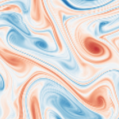
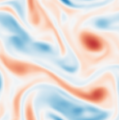
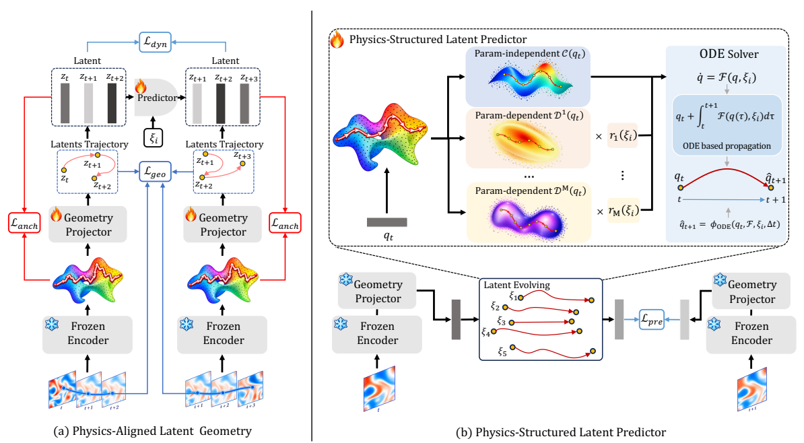
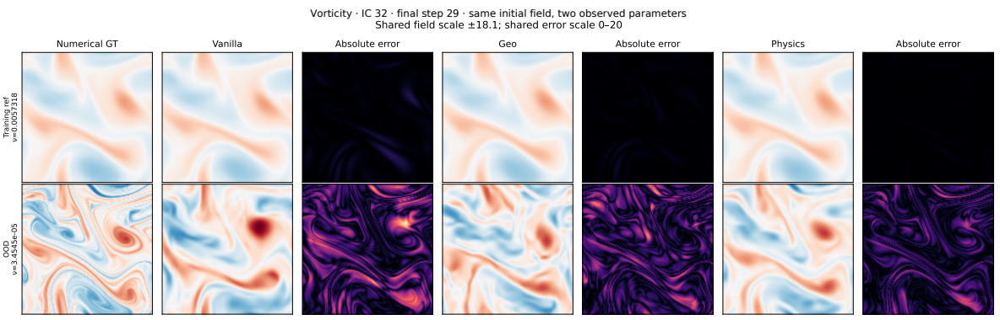

Information is there.
Frozen JEPA features support stronger local-state and parameter probes than reconstruction-based features on the evaluated PDEs.
RESEARCH PREDICTIVE PHYSICAL DYNAMICS
Predictive Representation Learning of Latent Dynamics Modeling for Parametric PDEs
Learning physical states that are informative,
evolvable, and ready to generalize.

Numerical ground truth
PDE-JEPA predictionMean ID improvement
Mean OOD improvement
Parametric PDE benchmarks
Best in-distribution results
Explore ground truth, model output, and absolute error side by side across nine PDE datasets.
ν = 1.818e-05
Predictive learning captures rich physical information. But an informative latent space alone does not guarantee accurate long-horizon forecasting.
PDE-JEPA connects representation learning with the structure of physical evolution: first learning predictive features, then aligning their trajectory geometry, and finally evolving them with a predictor that explicitly separates shared dynamics from parameter-dependent responses.
Frozen JEPA features support stronger local-state and parameter probes than reconstruction-based features on the evaluated PDEs.
Vanilla JEPA still gives higher in-distribution rollout errors on Wave-2D and Vorticity. Better probes do not automatically mean better forecasts.
Observations from Figure 1 and Section 1 of the manuscript ↗
Three stages. One goal: a latent state space
suited to forecasting and extrapolation.
Predict masked latent targets to learn physical regularities. Freeze the encoder and encode each downstream state frame by frame.
A lightweight residual projector aligns latent trajectory directions with physical evolution. An anchor preserves pretrained information.
Separate shared evolution from parameter-dependent responses, then integrate the learned vector field with a fixed-step RK4 solver.

The structured components provide a physics-inspired inductive bias; they are not required to recover the exact analytical PDE operators.
Transport, diffusion, waves, reaction–diffusion,
and fluid dynamics. Relative L2 error; lower is better.
Lowest ID error on eight benchmarks; second on Advection.
| PDE benchmark | Best baseline | Baseline error | PDE-JEPA | Improvement |
|---|---|---|---|---|
| Advection | CoDA | 0.0068 | 0.0074 | −8.8% |
| Burgers | LE-PDE | 0.0869 | 0.0428 | 50.7% |
| Heat | Poseidon-T | 0.0933 | 0.0274 | 70.6% |
| Wave-B | Poseidon-T | 0.1093 | 0.0350 | 68.0% |
| Combined | CAPE | 0.0085 | 0.0074 | 12.9% |
| Wave-2D | Zebra | 0.2070 | 0.1140 | 44.9% |
| Vorticity | LNS | 0.0592 | 0.0348 | 41.2% |
| HeterNS | UniSolver | 0.0098 | 0.0089 | 9.2% |
| Gray–Scott | UniSolver | 0.0323 | 0.0284 | 12.1% |
Source: Table 1 ↗. Values and relative improvements are reproduced as reported. A negative improvement indicates a higher error.
Lowest OOD error across all five evaluated benchmarks.
| PDE benchmark | Best baseline | Baseline error | PDE-JEPA | Improvement |
|---|---|---|---|---|
| Combined | UniSolver | 0.038 | 0.008 | 77.9% |
| Wave-2D | LNS | 0.610 | 0.157 | 74.2% |
| Vorticity | Zebra | 0.320 | 0.288 | 9.7% |
| HeterNS Viscosity | UniSolver | 0.037 | 0.011 | 69.5% |
| HeterNS Forcing | UniSolver | 0.105 | 0.103 | 1.5% |
| Gray–Scott | Poseidon-T | 0.083 | 0.033 | 59.7% |
Source: Table 4 ↗. HeterNS has two parameter-shift settings. Displayed errors are rounded; improvements are the values reported in the manuscript.
The headline averages, 33.4% ID and 51.4% OOD, are reported in the abstract. See the manuscript for full baseline comparisons, parameter ranges, and evaluation protocols.
OOD rollout error decreases as geometry alignment and structured prediction are added.
MODULE ABLATION · TABLE 2The geometry-aligned and physics-structured models follow the numerical solution more closely under the unseen parameter.

EXPLORE THE COMPLETE STUDY
Methods, benchmark details, and additional analyses.
Code on GitHub · Tanpig-X/PDE-JEPA